Results-driven Data Scientist specializing in Generative AI, Large Language Models (LLMs), and Computer Vision. Proven track record of architecting and deploying advanced AI solutions, including high-accuracy object recognition pipelines, RAG-based chatbots, and novel text-to-image generation frameworks. Passionate about leveraging deep learning and multimodal models to drive automation and solve complex business challenges.
Showcasing visual results from Computer Vision, Generative AI, and LLM frameworks.
Real-time people detection, tracking and grouping detection.
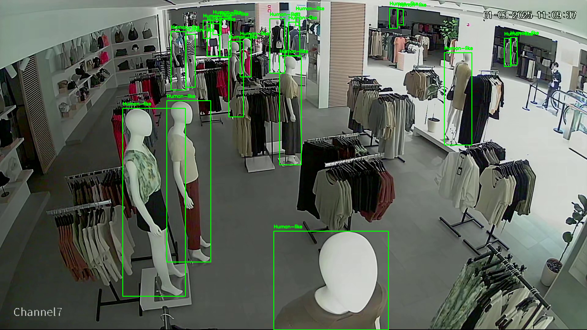
Exclude human-like objects inside people detection pipeline.
Automated analysis of web databases and OCR-supported PDFs using LangChain and RAG architecture.
Automated analysis of web databases and OCR-supported PDFs using LangChain and RAG architecture.
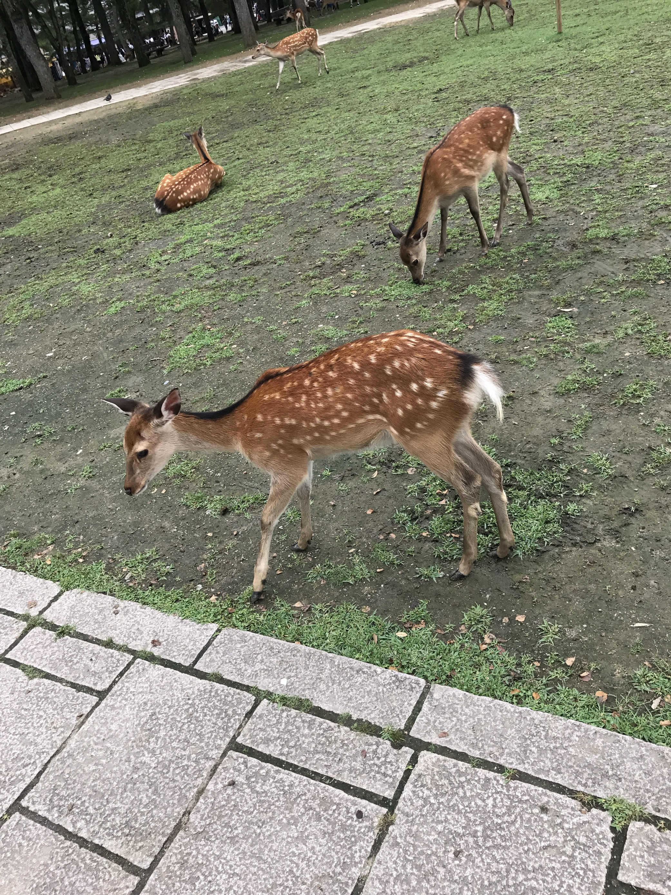
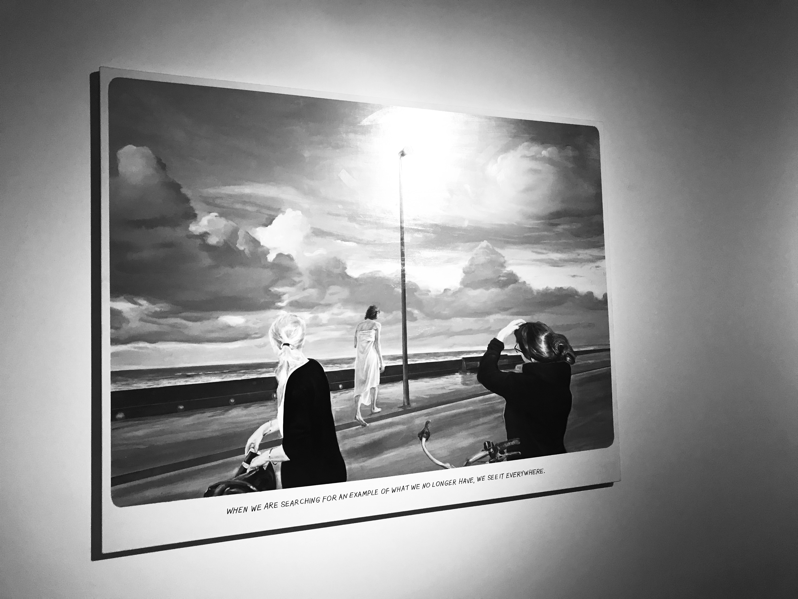
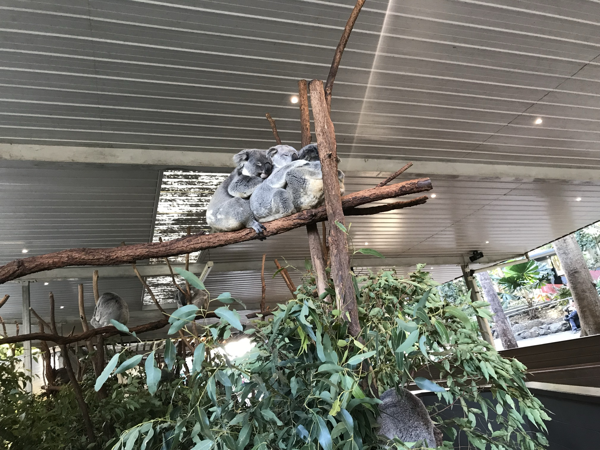
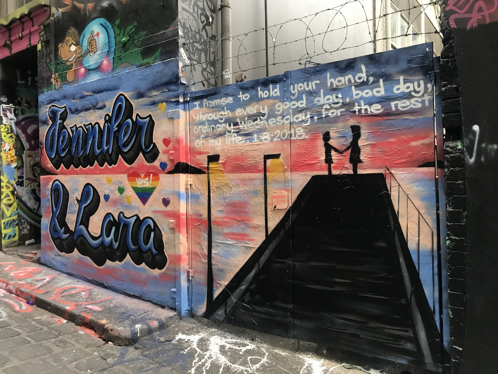
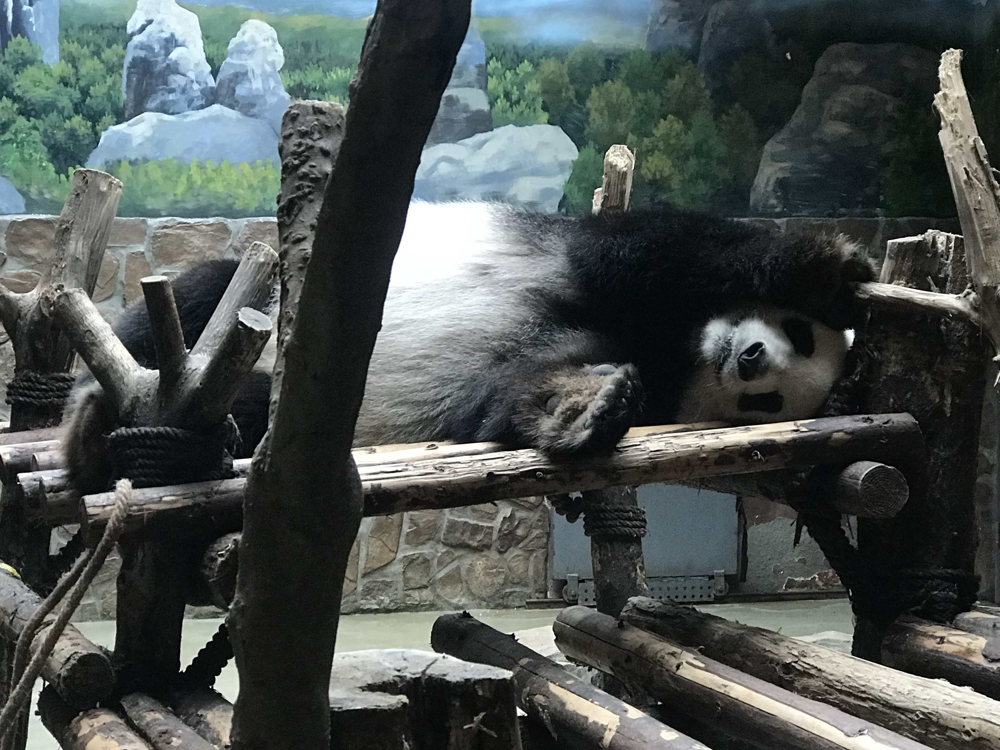
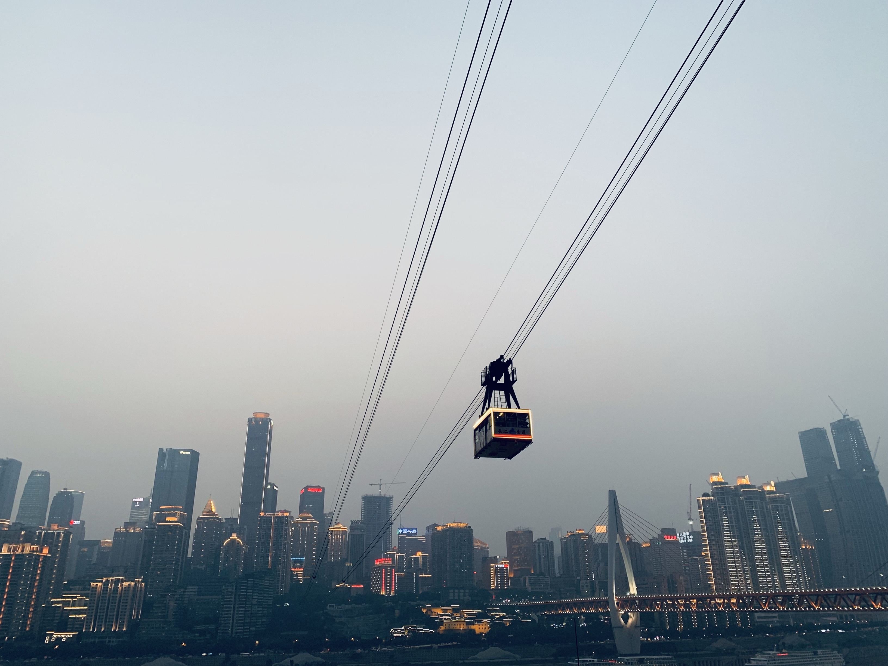
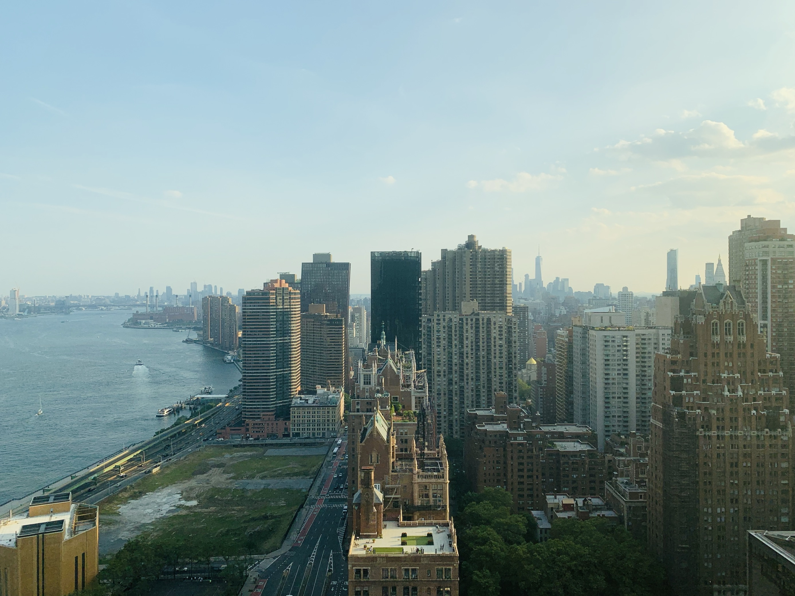
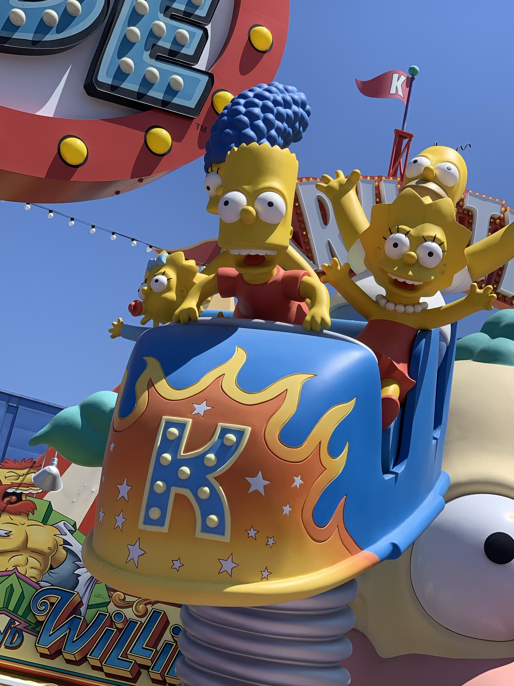
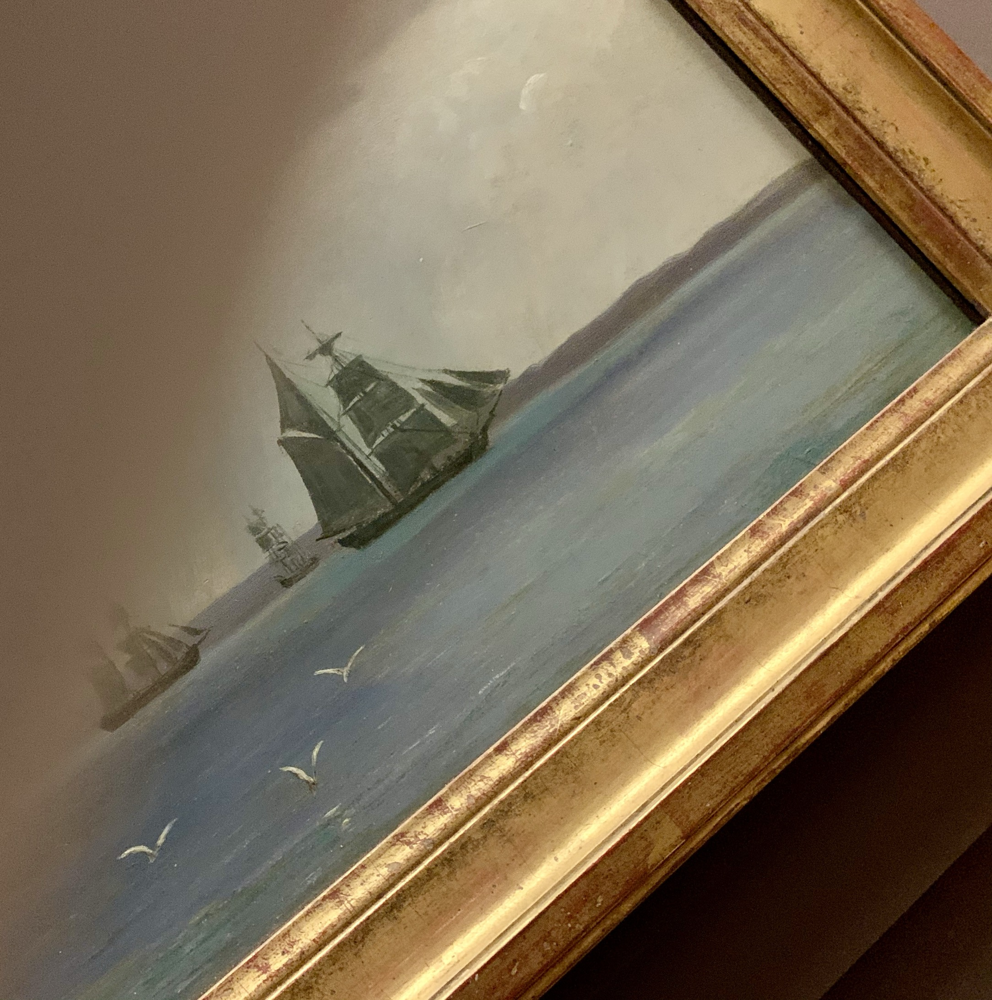
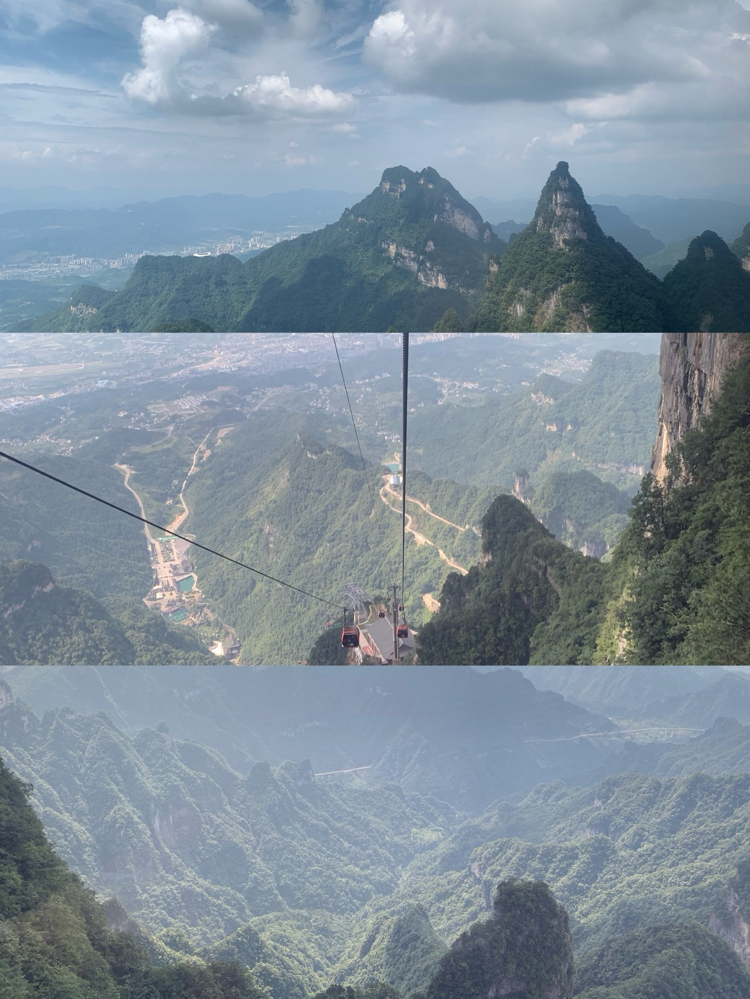